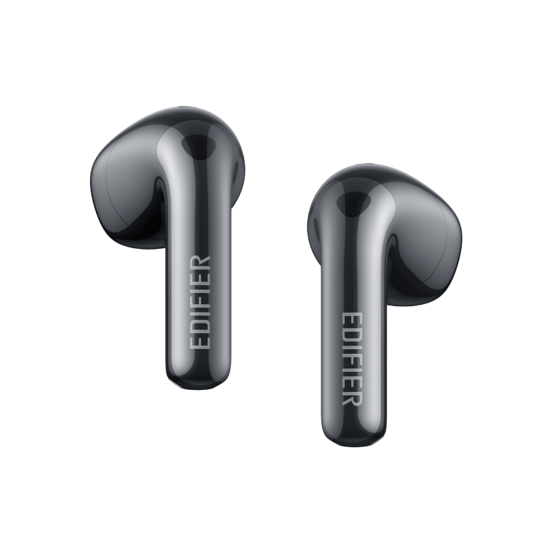
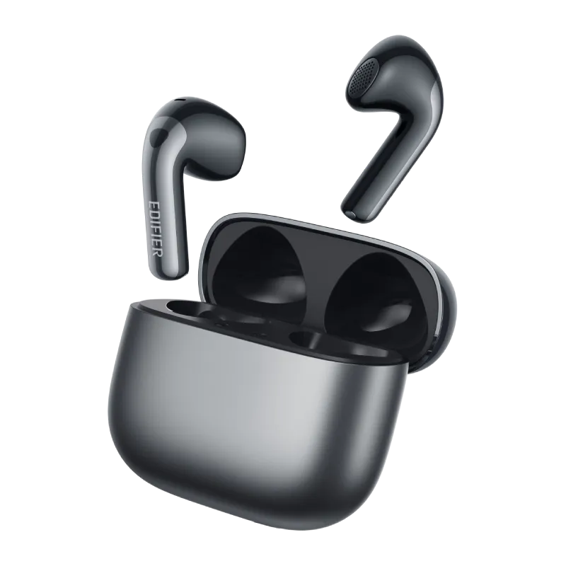

알리에서 찾은 AI 통역 이어폰, 에디파이어 EvoBuds·EvoBuds Pro — 5만원대에 21개 언어 실시간 통역
이어폰을 끼고 말하면 상대의 말이 번역되어 들리는 제품입니다. 8,800원 차이로 갈리는 착용 방식·ANC·조작 방식을 2026년 11월 알리 가격과 후기로 정리했습니다.
목차 · 9개 장
이 포스팅은 알리익스프레스 어필리에이트 활동의 일환으로, 일정액의 수수료를 제공받을 수 있습니다.
외국어가 급할 때 가장 먼저 떠오르는 건 휴대폰 번역 앱입니다. 그런데 막상 낯선 나라 길거리에서, 혹은 외국 손님을 응대하는 식당 카운터에서 번역 앱을 켜면 손이 두 개 더 필요해집니다. 그래서 요즘 알리익스프레스에서 눈에 띄는 것이 'AI 통역 이어폰' 입니다. 이어폰을 끼고 말하면 상대의 말이 내 귀에 번역되어 들어오고, 내 말은 상대에게 번역되어 들려주는 물건입니다.
그중에서도 값과 검증이 모두 잡힌 모델이 에디파이어(EDIFIER) EvoBuds와 상위형 EvoBuds Pro입니다. 국내에서는 아직 이름이 낯설지만, 두 제품 모두 알리 공식 스토어에서 평점 4.7을 유지하고 있고, 국내 판매가(9만원 안팎)와 비교하면 직구가 거의 절반 수준입니다. 이 글은 2026년 11월 26일 알리익스프레스 한국 사이트에서 직접 확인한 가격·후기·배송 조건을 그대로 정리한 글입니다.
1. 왜 지금 'AI 통역 이어폰'인가
1-1. 이어폰 + 통역기가 하나로 합쳐졌다
번역 앱은 화면을 봐야 하고, 별도 통역기는 들고 다녀야 합니다. AI 통역 이어폰은 평소에는 그냥 블루투스 이어폰으로 쓰다가, 필요할 때만 앱에서 통역 모드로 바꾸면 됩니다. 출장·여행·외국인 응대처럼 "가끔" 필요한 사람에게는 별도 기기를 사는 것보다 합리적입니다.
1-2. 가격이 '장난감 값'까지 내려왔다
몇 년 전만 해도 전용 통역 이어폰은 20만~30만원대였습니다. 지금은 중국 대형 오디오 브랜드들이 같은 기능을 넣은 모델을 5만~6만원대에 내놓으면서, "일단 써 보고 판단하자"가 가능한 가격이 됐습니다. 에디파이어는 1996년부터 스피커·이어폰을 만들어 온 브랜드로, 알리 공식 스토어의 긍정 피드백이 98.1% 입니다.
1-3. 단, '완벽한 통역기'는 아니다
미리 분명히 말씀드리면, 이 제품군의 번역은 기계번역 수준입니다. 뜻은 통하지만 문장이 매끄럽지 않고, 말이 빠르거나 주변이 시끄러우면 인식률이 떨어집니다. "급할 때 대화를 이어 가는 도구"로 보셔야 하고, 계약·의료처럼 정확도가 생명인 자리에는 부적합합니다.
2. 한눈에 비교: EvoBuds vs EvoBuds Pro
| 구분 | 에디파이어 EvoBuds | 에디파이어 EvoBuds Pro |
|---|---|---|
| 알리 판매가(2026-11-26) | ₩51,900 (표시 정가 ₩53,058~54,191) | ₩60,700 (표시 정가 ₩62,083) |
| 달러 환산(참고) | 약 US$37.56 (알리 표시 환산) | 약 US$44 (같은 환산 기준 추정) |
| 평점·리뷰 | 4.7 / 103건 | 4.7 / 119건 |
| 누적 판매 | 500+ | 350 |
| 착용 방식 | 세미인어(이어팁 없는 반이어) | 커널형(이어팁 삽입) |
| 노이즈 캔슬링 | 적응형 ANC | 하이브리드 ANC(에디파이어 보도자료 기준 최대 48dB) |
| 드라이버 | 13mm 트리컴포지트 | 듀얼 동축 다이내믹 |
| 고음질 코덱 | LDAC (Hi-Res Audio Wireless) | LDAC (Hi-Res Audio Wireless) |
| 블루투스 | 6.1 (80ms 저지연) | 6.0 |
| 배터리 | 단독 7시간 / 케이스 포함 최대 35시간 | 케이스 포함 최대 36시간 |
| 방수 | IP54 (케이스 제외) | IP54 (케이스 제외) |
| AI 통역 | 21개 언어 | 21개 언어 |
| 멀티포인트 | 2대 동시 연결 | 2대 동시 연결 |
| 무게 | 판매페이지 미표기 | 50g |
| 배송 | 무료 · 12/02~07 도착 예정 | 무료 · 12/02~07 도착 예정 |
| 재고 | 10~12개 | 17개 |
두 제품의 차액은 8,800원입니다. 커피 두 잔 값 차이로 착용 방식과 ANC 등급이 갈리니, 이 차이를 이해하고 고르시는 게 좋습니다.

3. 에디파이어 EvoBuds — 반이어형 AI 통역 이어폰
3-1. 생김새와 착용감
EvoBuds는 귀에 쏙 들어가는 이어팁이 없는 세미인어(반이어)형입니다. 에어팟 3세대와 같은 방식으로, 귀를 막지 않아 오래 껴도 답답함이 덜합니다. 실제 구매 후기에서도 "착용감이 좋다"는 평가가 반복해서 나옵니다(착용감 관련 키워드 6건). 반대로 귀가 작은 분은 흘러내릴 수 있어, 운동용으로는 Pro 쪽이 안정적입니다.
색상은 블랙과 스타라이트 두 가지입니다.

3-2. 음질과 기본 성능
- 13mm 트리컴포지트 드라이버: 저음이 단단하고 힘이 있습니다. 후기에서 "저음이 강화되어 소리가 풍성하다"는 평이 많습니다.
- LDAC 지원: 일반 블루투스보다 3배 많은 데이터를 전송하는 고음질 코덱입니다. 안드로이드 폰에서 개발자 옵션에서 LDAC를 켜야 제대로 쓸 수 있습니다.
- 블루투스 6.1 / 80ms 저지연: 영상 볼 때 입 모양과 소리가 거의 어긋나지 않습니다.
- 배터리 7시간(단독) + 35시간(케이스): 하루 출근길 사용에는 충분합니다.
- IP54: 땀과 물 튀김 정도는 견딥니다. 단, 충전 케이스는 방수 대상이 아닙니다.
3-3. AI 통역은 이렇게 씁니다
통역은 에디파이어 전용 앱 EDIFIER ConneX에서 작동합니다.
- 앱에서 이어폰을 연결하고, 오른쪽 위 번역(Translate) 메뉴를 엽니다.
- 내 언어와 상대 언어를 고릅니다(최초 1회 언어팩 다운로드).
- 화면 모드를 고릅니다. 사이드바이사이드(채팅처럼 위아래로 주고받기) 또는 페이스투페이스(마주 보고 화면을 사이에 두는 방식).
- 번역음을 스마트폰 스피커로 들을지 이어폰으로 들을지 선택합니다.
- 말을 하면 자동으로 인식해 화면에 번역문이 뜨고, 번역 음성이 재생됩니다.
사이드바이사이드 모드 — 채팅처럼 주고받기
화면에 대화가 메신저처럼 위아래로 쌓입니다. 상대가 여러 명이거나, 말한 내용을 나중에 다시 확인하고 싶을 때 편합니다.
페이스투페이스 모드 — 마주 보고 대화하기
화면을 가운데 두고 마주 앉아 이야기하는 방식입니다. 한 화면에 위는 상대 말, 아래는 내 말이 뒤집혀 표시되어 서로 읽기 쉽습니다. 식당·매장 응대처럼 짧은 대화에 적합합니다.
꼭 알아 두실 점
- 통역은 '대화·통화'용입니다. 음악이나 영상 소리를 번역해 주지는 않습니다.
- 앱 로그인과 언어팩 다운로드가 필요합니다. 처음 한 번은 번거롭습니다.
- 인터넷 연결이 필요한 것으로 안내되고 있습니다. 언어팩을 미리 받아 두면 오프라인에서도 된다는 후기도 있지만, 리뷰마다 말이 엇갈리므로 "인터넷이 있어야 안정적"으로 보시는 게 안전합니다.
- 이어폰을 착용한 채 적당한 속도로 말해야 인식률이 올라갑니다.
- 에디파이어 공식 페이지에는 "이 기능은 일부 국가/지역에서만 사용할 수 있다"는 유보 문구가 있습니다. 앱에서 한국어가 목록에 보이는지 먼저 확인하시길 권합니다. 국내 리뷰(EvoBuds Pro 기준)에서는 한국어를 포함해 약 20개국 언어를 지원한다고 확인된 바 있습니다.
3-4. 실구매 후기가 말하는 장점과 단점
장점 (긍정 키워드 순위)
- 음질이 좋다 (22건)
- 가격 대비 만족 (8건)
- 품질이 기대 이상 (7건)
- 착용감이 편하다 (6건)
- 성능이 좋다 (5건)
단점 (후기에서 직접 확인된 것)
- 터치가 너무 민감하다: 이어폰을 만지다 보면 원치 않는 조작이 될 수 있습니다. 앱에서 터치 동작을 바꿀 수 있습니다.
- 사람 많은 곳에서 끊김이 있다: 무선 기기가 밀집한 장소에서 연결이 불안정하다는 후기가 있습니다.
- ANC가 약하다: '노이즈 캔슬링이 효과 없다'는 평가가 5건 있습니다. 반이어형 구조상 한계이므로, ANC를 기대하신다면 Pro를 보셔야 합니다.
- 고음이 아쉽다: 저음은 좋지만 여성 보컬의 고음이 다소 흩어진다는 평이 있습니다.
에디파이어 EvoBuds — ₩51,900 알리에서 보기 →제휴 링크 · 구매 가격은 동일합니다
4. 에디파이어 EvoBuds Pro — 8,800원 더 내면 얻는 것
4-1. 커널형 + 하이브리드 ANC
Pro는 이어팁을 귀에 삽입하는 커널형입니다. 에디파이어 보도자료 기준 최대 48dB 하이브리드 ANC를 내세우고, 마이크도 3개를 씁니다. 실제 후기 키워드에서도 'ANC가 좋다'가 9건으로, 기본형에 'ANC가 약하다'는 평가가 5건 있던 것과 대비됩니다.
여기에 공간음향(해외 리뷰 기준), 듀얼 동축 다이내믹 드라이버, 최대 36시간 재생이 더해집니다. 통역 기능은 기본형과 같은 21개 언어입니다.

4-2. 솔직한 단점 — 여기가 중요합니다
- 조작이 불편하다: 터치가 아니라 압력식(꾹 누르기)이라 "어색하다"는 평가가 8건으로, 단점 키워드 중 가장 많습니다.
- 불량·AS 후기가 있다: 한 구매자는 충전·페어링 불량인데 판매자 응답이 없고 반품도 어려웠다고 추가 후기를 남겼습니다. 알리 직구의 공통 위험입니다.
- LDAC 설정이 어렵다: 초기 설정이 번거롭다는 평이 있습니다.
- ANC 기대치는 낮추세요: 'ANC가 좋다'는 평과 '이 정도가 ANC인가' 싶다는 평이 함께 있습니다. 20만원대 국내 제품과 비교하면 부족합니다.
에디파이어 EvoBuds Pro — ₩60,700 알리에서 보기 →제휴 링크 · 구매 가격은 동일합니다
5. 그래서 어느 쪽을 사야 할까
5-1. EvoBuds가 맞는 사람
- 이어폰을 하루 종일 껴도 답답하지 않았으면 한다
- 통역은 여행·가끔의 외국인 응대 정도로 충분하다
- ANC는 크게 필요 없다
- 최저가로 AI 통역을 경험해 보고 싶다
5-2. EvoBuds Pro가 맞는 사람
- 지하철·비행기에서 소음을 실제로 줄이고 싶다
- 귀에 꼭 맞는 커널형을 선호한다
- 음악 감상 비중이 높다
- 8,800원 차이는 충분히 값어치가 있다고 본다
5-3. 두 제품 모두 맞지 않는 사람
- 회의 통역처럼 정확도가 중요한 업무에 쓸 분 (전용 통역기나 사람 통역을 권합니다)
- 국내 A/S를 반드시 받아야 하는 분 (알리 직구는 국내 AS가 어렵습니다)
6. 사기 전 꼭 확인할 5가지
6-1. 한국어 지원 여부
판매 페이지에는 '21개 언어'라고만 적혀 있고 목록은 나오지 않습니다. 에디파이어 공식 표기는 21개 언어, 국내 리뷰에서는 한국어 포함 약 20개국으로 확인됩니다. 다만 앱 버전에 따라 목록이 다를 수 있으니, 구매 후 앱에서 언어 목록을 먼저 확인하세요.
6-2. 앱 로그인·인터넷·언어팩
통역은 앱 안에서만 됩니다. 계정 로그인 → 언어팩 다운로드 → 이어폰 연결 순서를 처음에 한 번 거쳐야 하고, 대화 중에는 인터넷이 필요합니다. 해외여행 중이라면 현지 유심·로밍을 준비하셔야 합니다.
6-3. KC 인증·정품·AS
이 글을 쓰며 확인한 판매 페이지의 규격 항목에는 KC(전파적합성) 인증 정보가 표시되어 있지 않았습니다(같은 스토어의 다른 리스팅에는 'Unavailable(판매자 미제공)'로 표시된 경우도 있었습니다). 블루투스 기기이므로 국내 전파법상 인증 여부가 문제될 수 있습니다. 또 알리 구매는 국내 A/S가 사실상 어렵고, 무료 반품도 조건(미개봉·기간)을 확인해야 합니다.
6-4. 배송·관세
배송 조건 (판매페이지 표기)
- 무료배송, 도착 예정 12월 2일~7일
- 지연 시 ₩1,300 쿠폰, 분실·파손 환불, 30일 미도착 환불, 무료 반품이 표기되어 있습니다
관세·부가세
5만~6만원대 단품은 관세 부담이 크지 않지만, 여러 개를 한 주문에 담으면 과세될 수 있습니다. 선물용으로 두 개 이상 사실 때는 주문을 나누는 편이 안전합니다.
6-5. 가격·재고 변동
확인 시점 재고는 EvoBuds 10~12개, Pro 17개뿐이었고, 가격도 조회할 때마다 ₩51,900 ↔ ₩53,058 처럼 조금씩 달라졌습니다. 블랙프라이데이 시즌이라 할인 폭이 자주 바뀝니다. 결제 화면의 최종 금액을 기준으로 판단하세요.
7. 구매 링크 모아 보기
| 제품 | 알리 판매가 | 링크 |
|---|---|---|
| 에디파이어 EvoBuds (세미인어) | ₩51,900 | https://s.click.aliexpress.com/e/_c40QUMGh |
| 에디파이어 EvoBuds Pro (커널형·ANC) | ₩60,700 | https://s.click.aliexpress.com/e/_c4CudRA1 |
두 링크 모두 에디파이어 공식 스토어의 해당 상품으로 연결되는 것을 직접 확인했습니다.
8. 마무리
AI 통역 이어폰은 "이어폰을 하나 더 사는 것"이 아니라, 평소 쓰는 이어폰에 통역 기능을 얹는 것입니다. 그 관점에서 보면 5만원대 EvoBuds는 부담 없이 시도해 볼 만한 선택이고, 소음 차단까지 원한다면 8,800원을 더해 Pro로 가는 편이 만족도가 높습니다.
다만 이 제품은 완벽한 통역기가 아니라 '대화를 이어 주는 도구' 입니다. 이 점을 기대치로 잡고 사시면 후회가 적습니다. 가격과 재고는 수시로 바뀌니, 구매 전 링크에서 최종 금액을 꼭 확인하세요.
이 포스팅은 알리익스프레스 어필리에이트 활동의 일환으로, 일정액의 수수료를 제공받을 수 있습니다.
참고 자료 (2026년 11월 26일 확인)
- 가격·평점·판매수·배송·재고: ko.aliexpress.com 상품페이지 2건, 2026-11-26 18:2x 조회
- 통역 기능·스펙: 판매페이지 설명 + edifier.com/global 공식 페이지 + 국내 리뷰(piscomu.com, EvoBuds Pro 한국어 지원·페이스투페이스 모드) + 일본 리뷰(monopedia.jp, 21개 언어·오프라인 언어팩)
- 국내가 비교: 알리 내 '[Official Korean Release] Edifier Evobuds Pro' 리스팅 ₩89,000, 가격비교 사이트(직구각) 2026-11-24 집계 EvoBuds ₩96,240 / Pro ₩96,840~106,620
- 48dB ANC: 에디파이어 일본 보도자료(PR TIMES, 2025-11-05)
- 한국어 지원 여부는 판매 페이지에 확정 표기가 없어, 국내 리뷰 기준(약 20개국)으로 적었습니다.
※ 본문의 가격·평점·재고·도착 예정일은 2026년 11월 26일 확인 시점의 값이며, 판매처·쿠폰·재고에 따라 달라집니다. 블랙프라이데이 할인 종료 후에는 금액이 달라질 수 있습니다.